Five committed directions for the lifeline macOS app icon, each rendered through three engines: the hand-authored layered SVG master (the file that ships), an independent Arrow vector take, and a GPT Image material take steered with Apple Tahoe corpus references. Small sizes shown are the real 128/32/16 px renders, the squint test, not scaled mockups.
A heartbeat that flatlines, dips, then decisively recovers. Emissive mint on a charcoal cushion; the bright node at the peak is the agent brought back.
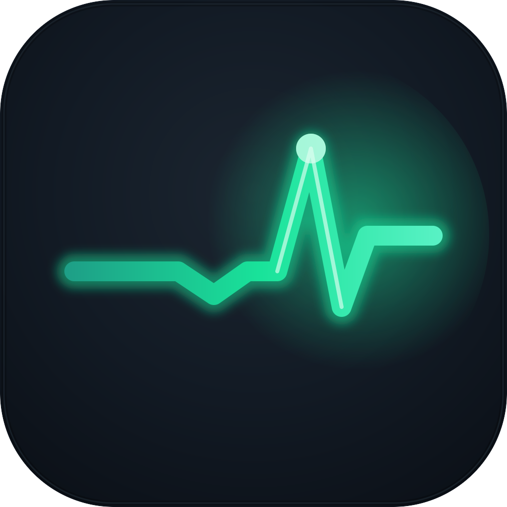
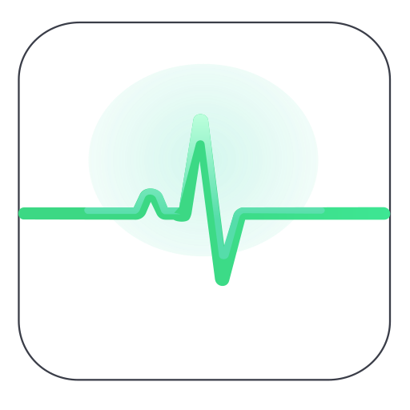
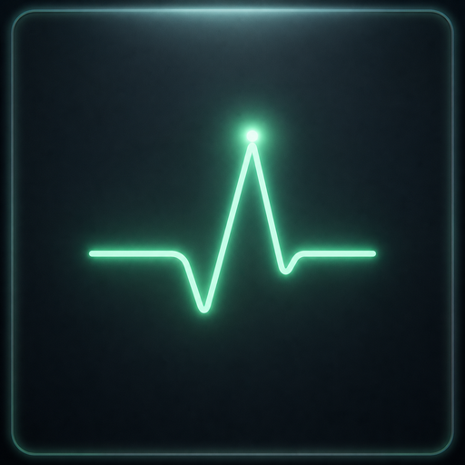
The whole product in one gesture: going under, then back. Silhouette names itself at 16 px; identity is carried in shape and value, so Dark/Clear/Tinted variants hold. One hue family.
An ECG can read "health app" at a blink; the flatline prefix is the argument against that. The raster take added a glowing border frame; ignore the frame, keep the glow register.
A frosted-white lifeline dips and hooks back up, catching a node in the low of its curve. Teal gel tile; white as a material, the ground bleeding through.
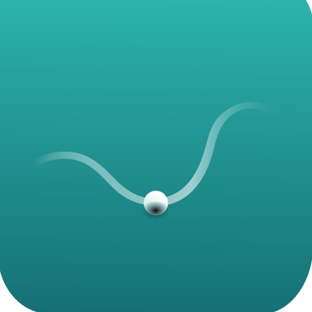
Clean, native, quietly does the metaphor. The most Apple-register of the five.
The catch reads softly; the node can read as a drip. The raster take accidentally produced a figure-with-raised-arms double-read (crest as arms, node as head), a stronger metaphor worth folding into the master if this direction is chosen.
The literal lifeline: a coral gel ring-buoy with frosted lashings on porcelain, the teal agent-node resting safely in the centre. Warm coral deliberately breaks the blue default.
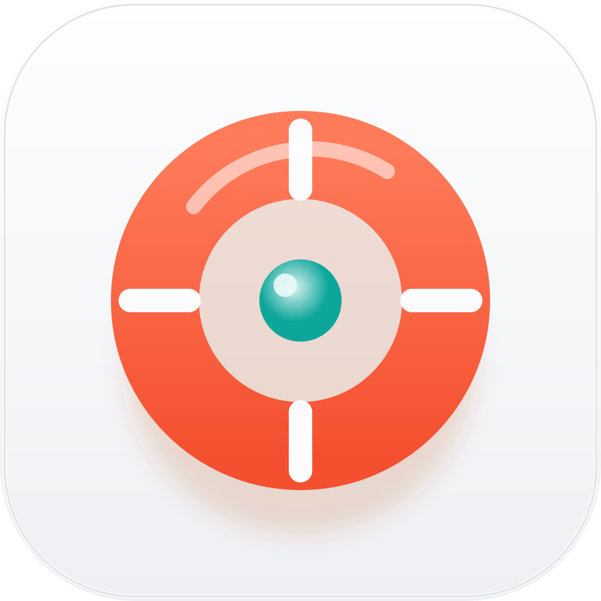
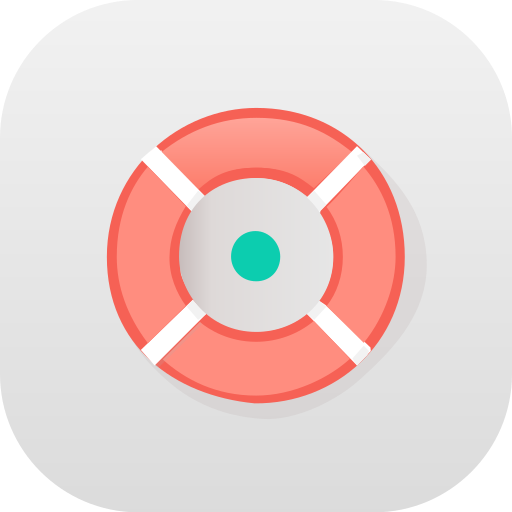
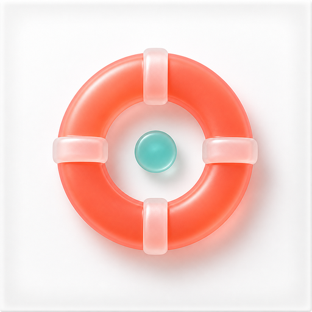
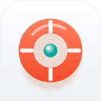
The most instantly nameable silhouette of the set, at every size including 16 px. The raster material take is excellent; the ship path is the master's geometry with C's material cues.
Adjacent to help/support iconography (Apple's Tips territory). The teal agent-node in the centre is what makes it this app.
One continuous rope forming a lowercase "l" that curls into a rescue hook cradling a mint bead. Austere developer register.
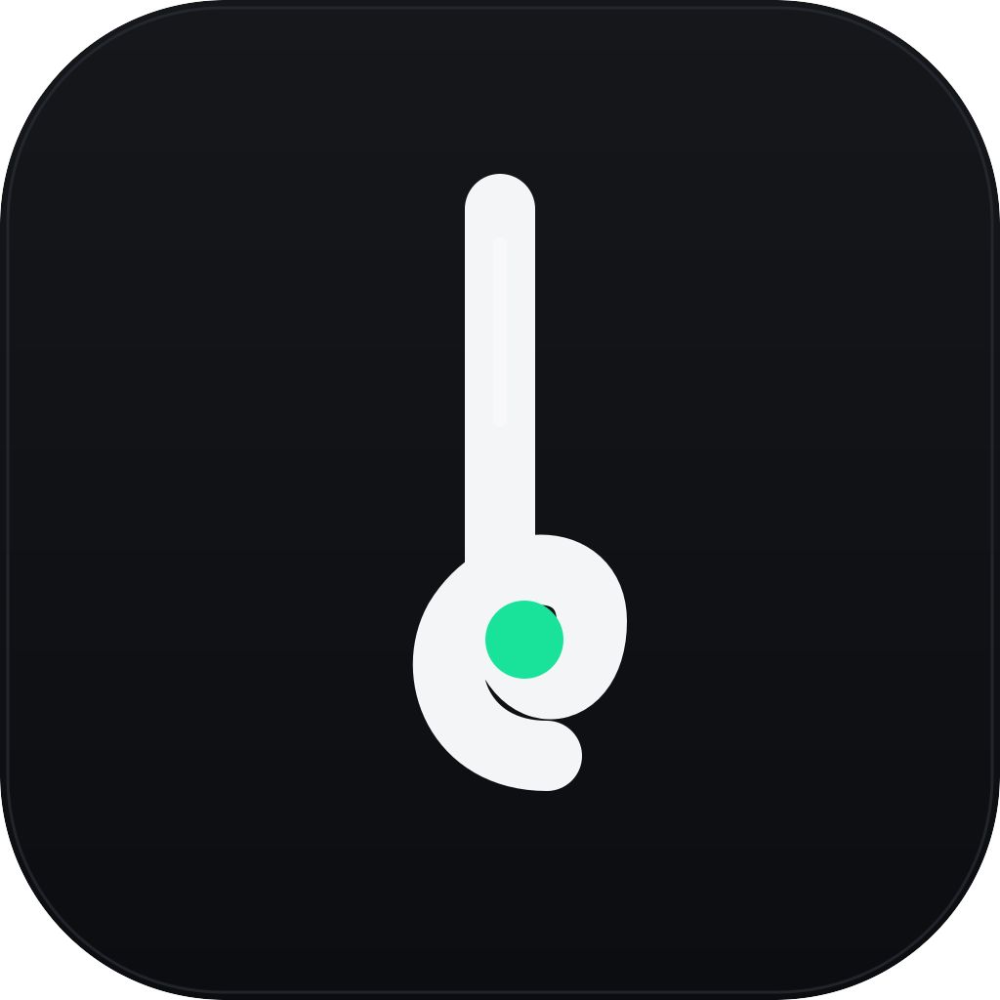
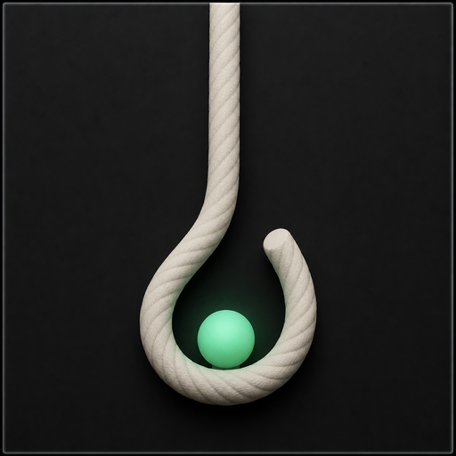
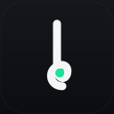
At 16 px the mark collapses toward an exclamation mark, and the raster take exposed a noose association in the hanging-rope composition that has no place in a tool about things dying. Kept for the record, not recommended.
A silver safety line strung between the top corners bows under the glowing amber orb it has just caught. Premium, nocturnal; the sanctioned emissive-interior move.
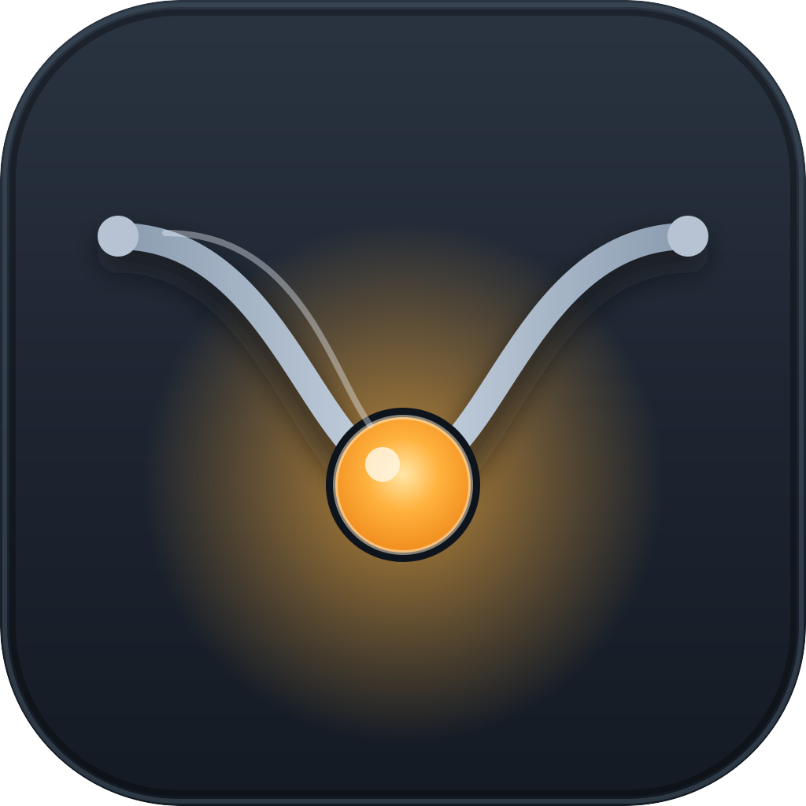
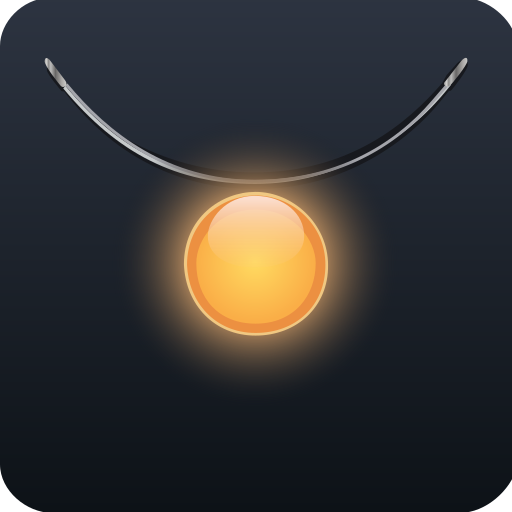
Gorgeous at Dock size; the emissive-interior move is the current era's sanctioned second light.
The thin line fades at 16 px and the read drifts toward "pendant necklace" (the Arrow take confirmed the drift). Viable if the line gains real weight.